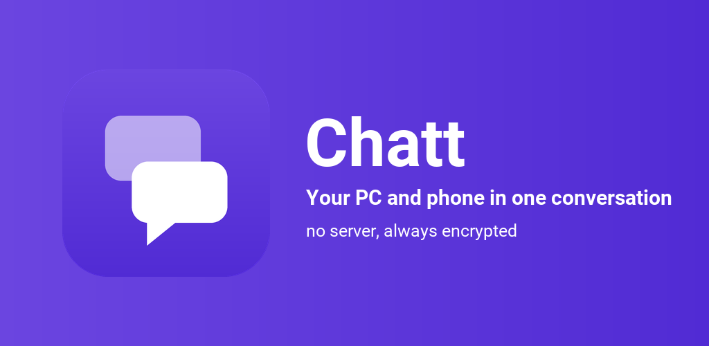
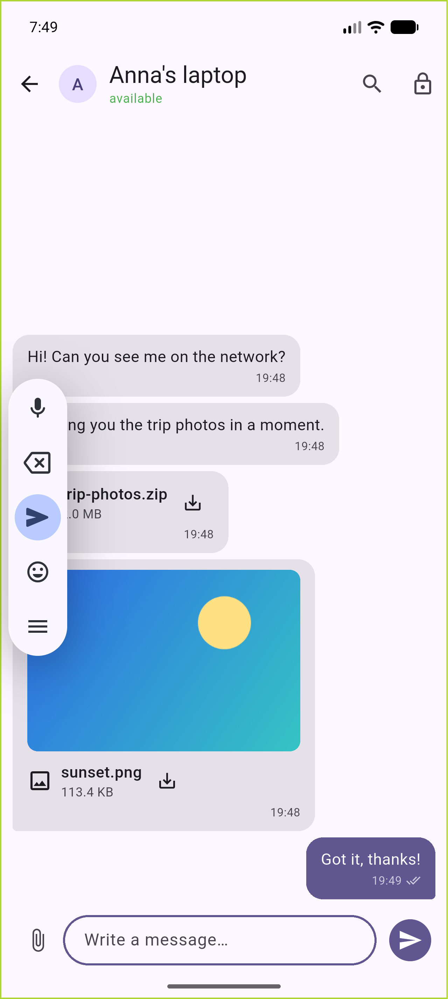
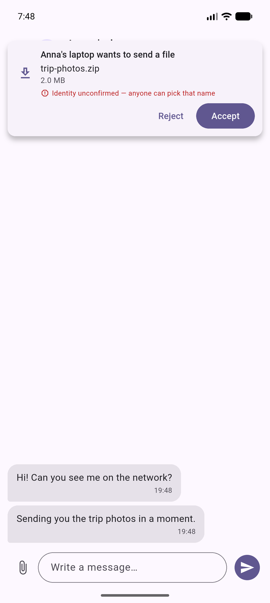
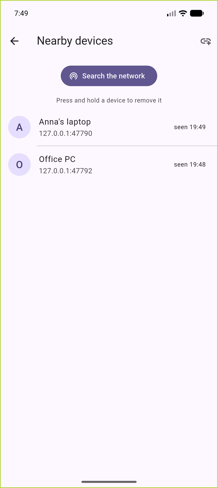
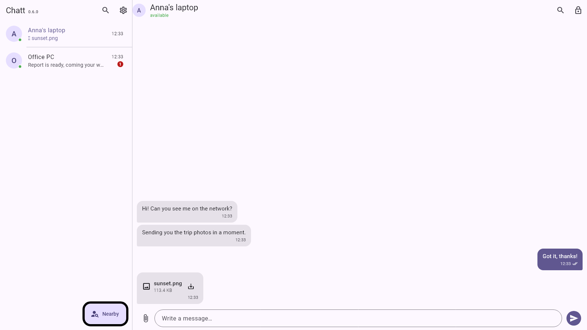

Messages and files travel straight from one device to the other, over your own Wi-Fi.
No server, no account, no cloud. Always encrypted.

Latest release: checking…
A shortcut in the Start menu, an entry in the system uninstall list and one place for updates. It installs for your own account, so it never asks for an administrator password.
Download installer
Unpack it anywhere and run chatt.exe. It writes nothing to
the system beyond its own data.
An APK to install from the phone. Android asks for permission to install from this source the first time.
Download APKThe installer is not signed with a certificate, so SmartScreen shows “Windows protected your PC”. Choose “More info”, then “Run anyway”. Once installed, the app tells you when a newer release is out and fetches it for you.
Conversations with history, file transfers the receiver agrees to, and encryption from the first message on.
One broadcast across the network and the devices see each other. When the router isolates its clients, you add the other device by IP address.
Stored on your side, delivered, acknowledged. A failed one retries with a single click, and when the other person's address changes, the app finds them again by identity.
The receiver first sees the name, the size and the checksum. An interrupted transfer resumes where it stopped and is verified with sha256.
The conversation database sits encrypted, and the system holds the key: Keystore on Android, DPAPI on Windows.
A foreground service on Android, a tray icon on Windows. Messages arrive with the window closed.
A light and a dark theme, backgrounds to choose from, two panes in a wide window and one screen on a phone.
The same set of screens on a phone and on a monitor.




Traffic goes straight between the devices on your network. There is no server anywhere along the way.
Every connection agrees on its own key. Recorded traffic stays unreadable even after a device is stolen.
A QR code or a six-digit code to compare on both screens. Once confirmed, you know whose key is on the other side.
No telemetry, no ads, nothing collected. The only outbound request is the check for a newer release, and it stays off until you turn it on.